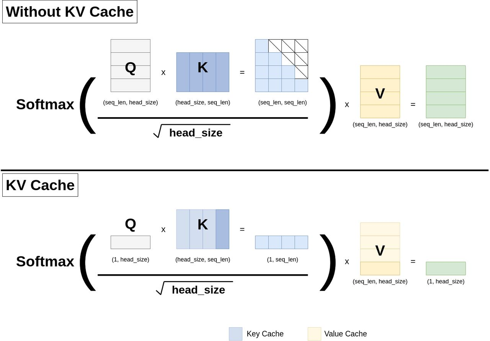
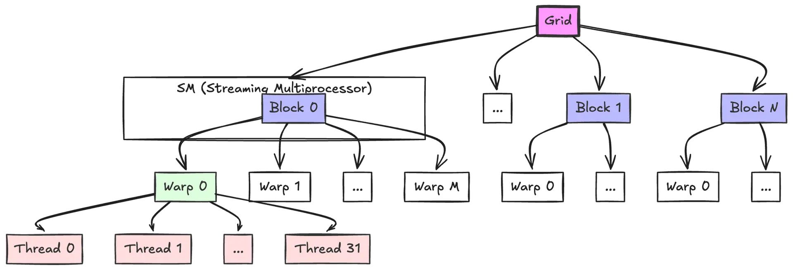

网络文章@202506
(311) The KV Cache: Memory Usage in Transformers - YouTube

人工智能让人文学科变得更加重要，但也变得更加怪异 — AI makes the humanities more important, but also a lot weirder
But in the longer run, the damage is being done to students. By making effort an optional factor in higher education rather than the whole point of it, LLMs risk producing a generation of students who have simply never experienced the feeling of focused intellectual work. Students who have never faced writer’s block are also students who have never experienced the blissful flow state that comes when you break through writer’s block. Students who have never searched fruitlessly in a library for hours are also students who, in a fundamental and distressing way, simply don’t know what a library is even for. 但从长远来看，这对学生造成了损害。将努力作为高等教育中的一个可有可无的因素，而不是其全部意义，法律硕士有可能培养出一代从未体验过专注于智力工作的感觉的学生。从未遇到过写作瓶颈的学生，也是从未体验过突破写作瓶颈时的畅快淋漓的学生。从来没有在图书馆里毫无结果地找上几个小时的学生，也是根本不知道图书馆是用来做什么的学生。
AI and the Rise of Judgement Over Technical Skill https://notsocommonthoughts.com/blog/ai-and-judgement/
As AI continues to evolve, we’ll see more roles shift from technical execution to strategic judgement. The most valuable professionals will be those who can:
- Ask the right questions
- Frame problems effectively
- Make sound decisions
- Provide meaningful direction to AI tools
判断力比技术更重要 | Hacker News — The rise of judgement over technical skill | Hacker News
The problem wasn't low paid labor, it was just incompetent labor. You can find competent developers in all these countries offering lower pay, India, Brazil, Romania, Poland, China, Pakistan, its just that they would already be hired by other higher paying companies and what is left for the ones that are looking for the lowest paid possible workers are the incompetent ones. 问题不在于低薪劳动力，而在于不称职的劳动力。你可以在印度、巴西、罗马尼亚、波兰、中国、巴基斯坦等所有这些提供低薪的国家找到有能力的开发人员，只是他们已经被其他高薪公司雇佣了，而那些正在寻找最低薪工人的公司只剩下那些不称职的人。
Reminds of me working in IT. One company tried to outsource my job to India five different times before they were mostly successful at it. The companies that are successful aren't the ones that assume it'll cost 1/10th the price, they are the ones that know it'll cost 60+% of the price and still require some handholding. 这让我想起了我在 IT 行业工作的经历。有一家公司曾五次试图将我的工作外包给印度，最后才基本成功。成功的公司并不是那些认为成本只有 1/10 的公司，而是那些知道成本只有 1/10 的 60%以上，而且还需要一些帮助的公司。
If you're hiring on price alone, you're already selecting the pool that doesn't contain the most competent labor. 如果您仅凭价格来招聘，那么您选择的人才库中就没有最有能力的劳动力。
"Never buy the cheapest version of something." I don't remember who told me that, but it was good advice. There's always a reason. "永远不要买最便宜的东西"我不记得是谁告诉我的，但这是个好建议。总是有原因的
https://weibo.com/1497035431/PuVqmzwHE
我们知道有一个著名大厂（大部分人都用过他们家产品），非常牛逼，深谙拖账期的问题，和其他大厂形成鲜明对比，绝不拖延，付款非常及时。但是以此为条件，把合作金额压得非常低。这也是一个了不起得创新，你在我这里少赚点，我让你资金转的快，有些小厂老板一看能快速拿到钱，在这个残酷的市场下，薄利总比垫资风险小，总比倒闭强，于是也干了。。
洋人大厂这一点就比较好，约定的账期一定会支付，而且还会有条款，提前支付的话，能减免一定比例的费用。现在大家都喜欢出海，服务洋人，主要是洋人在做生意这块，确实有信仰约束，不乱来。。
Introduction to CUDA Programming for Python Developers | PySpur | AI Agent Builder
We've seen how threads are organized into warps (eg. 32 threads each) and then grouped into blocks, and how these blocks are scheduled onto Streaming Multiprocessors (SMs). Now let's zoom out to see the complete picture. A thread block is a group of threads that can cooperate via shared memory and synchronization and that execute on the same SM. You can think of a block as a team of threads working together on a portion of the data. The grid is composed of all the blocks launched by a kernel, representing all the teams tackling the entire problem. In the diagram, you can see how the grid is divided into multiple blocks, each block is subdivided into warps, and each warp contains multiple threads.

https://www.zhihu.com/question/1897959255778231029/answer/1911414619534263222
作者：lu luce 链接：https://www.zhihu.com/question/1897959255778231029/answer/1911414619534263222 来源：知乎 著作权归作者所有。商业转载请联系作者获得授权，非商业转载请注明出处。
编程，英语和数学。这三个是基本上都是不归路。
先是英语：
我在2017年学完新概念英语以后，发现新概念英语只是一个可以在一年半的时间里，让我的单词量和阅读水平从四级提高到托福的教程。等我学完了以后，还有漫漫长路等着我呢？ GRE单词要背，长难句分析要做。数不清的题目。基于英语的汗牛充栋的文学作品，科技文章。VOA，BBC的广播。Science网站。经济学人，纽约客杂志。 从四级提高到托福的这条河流的航行只是我英语学习长路中的一条小溪。当我学完新概念英语这记小舟，驶出英语学习的河流。等待我的是像太平洋一样浩瀚无垠的英语世界。
之后是编程：
你只要学会了C和C++。。你的面前就是一个浩如烟海的代码世界。。操作系统，编译器，通信协议栈，游戏引擎，光追引擎，高性能数据库。 这是一个你一生都无法穷尽的世界。你就像一个勇敢的水手，驾驶着你手头那个破笔记本电脑，遨游在代码的海洋中，你会乐趣无穷。。 不管你是否承认，代码生成的软件已经遍布你的身边。除非你是住在深山老林的原始人，或者是吃饱等死的所谓普通人。你都无法摆脱软件。 遨游在代码的海洋里，不仅让你和这个世界一起前进，还能让你获得丰厚的收入。拥有赚钱的快乐。
最后是数学：
首先B站上，啥视频都有。。有人喜欢看就多写点。首先如果高数基础不好就看同济的高数和线性代数，概率论就看浙大的。这些书先别管和美国教材相比好不好，这些书都是有对应的辅导书和参考习题解答的。你先对着玩一遍。之后过一遍吉米多维奇。 之后就可以走不同的方向，想玩微积分方向的就去B站刷一遍数学分析。之后刷一遍裴里文。 如果进一步想玩，就去看程其襄的实变函数。这个在B站有一个非常好的视频教程。ModuliSpace做的。 想玩实分析和复分析的，那本可视化方法现在B站上也有教程。 如果看DL眼热的，对概率论有兴趣的，可以先买一本北大黄皮的测度论和概率论基础，这个在B站上也有教程。还有Advanced probability也有讲解视频。上面的都搞完，就可以玩Foundation of ML轻松一下了。 反正就是有很多事情可以玩。